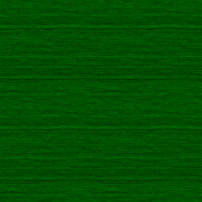
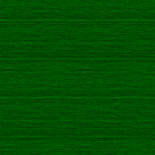
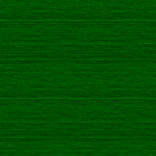

An example of converting png/jpeg to .gltf
This example uses HTML IMAGE ELEMENT (png or jpeg) as an input
-- Other accepted formats are [ HTMLCanvasElement, ArrayBuffer(PNG) , Data URL(PNG) ] ---
 

This example uses HTML IMAGE ELEMENT (png or jpeg) as an input
-- Other accepted formats are [ HTMLCanvasElement, ArrayBuffer(PNG) , Data URL(PNG) ] ---
